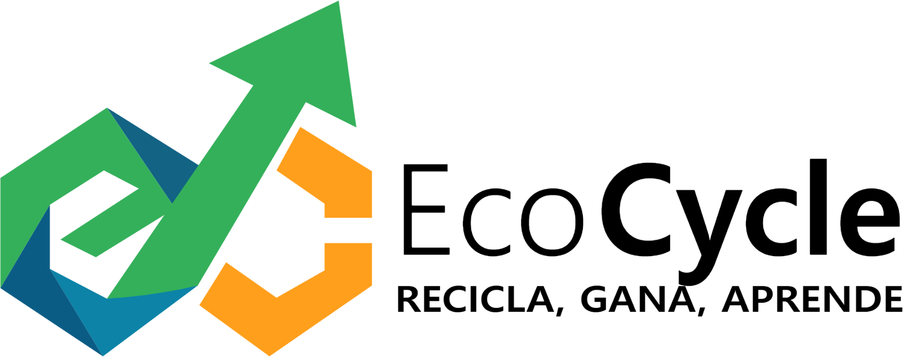
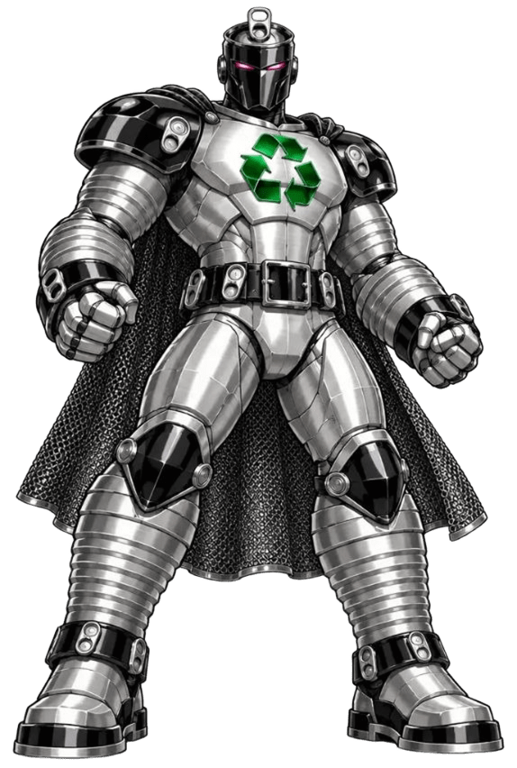

LOGOTIPO PRINCIPALVERSIÓN FINAL

EcoCycle
Identidad principal. Integra símbolo, nombre y eslogan en una composición equilibrada.
Reciclar también puede ser una aventura. EcoCycle conecta tecnología, conciencia ambiental y recompensas para impulsar un cambio real.
EcoCycle es una experiencia digital que hace del reciclaje una acción sencilla, cercana y motivadora.
La marca une a ciudadanos, recicladores y comercios aliados. A través de la geolocalización, los puntos, las recompensas y un videojuego educativo, convierte los pequeños gestos en hábitos sostenibles.
El nombre, el símbolo y el eslogan trabajan juntos para construir una identidad reconocible, consistente y con propósito.

Identidad principal. Integra símbolo, nombre y eslogan en una composición equilibrada.
Sus flechas entrelazadas representan continuidad, economía circular y transformación.
“Eco” hace referencia al cuidado ambiental; “Cycle”, al ciclo de aprovechamiento de los materiales.
Tres verbos que resumen la experiencia: actuar por el planeta, recibir beneficios y aprender jugando.
Una paleta de tres colores corporativos. Cada uno comunica un aspecto esencial de EcoCycle y tiene una función específica en la experiencia.
Se asocia con sostenibilidad, esperanza y crecimiento. Representa el reciclaje y las acciones que generan un impacto ambiental positivo.
USO · ACCIONES AMBIENTALES, LOGROS Y CONFIRMACIONESSe relaciona con confianza, seguridad y responsabilidad. Expresa el componente digital que conecta a ciudadanos, recicladores y comercios aliados.
USO · NAVEGACIÓN, CONTENIDO E IDENTIDAD DIGITALEvoca juventud, entusiasmo y creatividad. Da protagonismo al videojuego, los desafíos, los puntos y las recompensas.
USO · BOTONES, PREMIOS, INSIGNIAS Y GAMIFICACIÓNEl verde y el azul son tonos próximos dentro del círculo cromático y refuerzan la relación entre naturaleza y tecnología. El naranja aporta contraste y dinamismo frente al azul. Estas asociaciones orientan el diseño, aunque su interpretación puede variar según el contexto.
El blanco es un neutro de apoyo, no un cuarto color corporativo. Las proporciones son una guía flexible, no una regla rígida.
El sistema visual mantiene el mismo lenguaje en interfaces, materiales educativos y comunicaciones.
Versión preferente para presentaciones, documentos y espacios digitales.
El símbolo mantiene protagonismo en interfaces de alto contraste.
Familia tipográfica de referencia del logotipo. En la interfaz web se emplean fuentes complementarias de lectura.
Los héroes del reciclaje conectan la identidad de marca con el videojuego educativo. Cada personaje representa un material y una forma de proteger el planeta.

Papel · Escudos y trampas

Latas · Resistencia y transformación

Vidrio · Caminos y estructuras

Plástico · Transformación

Cartón · Protección

Electrónicos · Reparación
Una acción consciente puede convertirse en el comienzo de algo mucho más grande.
Descargar identidad de marca ↗